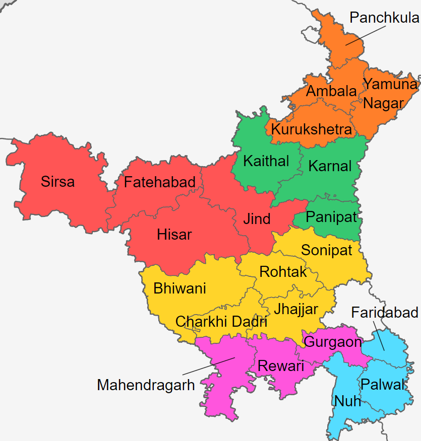

Birthplace: Uchana, Haryana
2002 - 2013Grateful for being born in Haryana, where innocent hearts take pride in everything they do. With a loving family and great friends, I cherish every moment.

Matriculation: Najafgarh, Delhi
2013 - 2017After our time in Haryana, we relocated to Najafgarh, Delhi – a new and exciting chapter in my life. Moving from a village to a city presented its challenges, but the experience was enriching. Among the many memories, my 9th and 10th classes stand out as some of the best moments in my journey.
Senior Secondary School: GVPS
2017 - 2019Now, having acclimated to the atmosphere of Delhi. Opting for the non-medical stream seemed like a fun choice at the time. But looking back, I realize it was one of the worst decisions I've ever made. It doesn't sound well, ik.

Graduation: BTech
2019 - 2023Continuing my journey, I pursued B.Tech at BVCOE College in Delhi, an exciting chapter reminiscent of my formative years. It taught me valuable lessons, fueled my passion for design, and fostered an environment of growth and innovation.

Part-2 of Life: Business
2023 - OngoingEmbarking on the path of my family business marked the beginning of a new chapter in my life. As an IT professional, I found recognition while learning the intricacies of business operations and strategies. It's a fulfilling and transformative journey, shaping my career in unique and rewarding ways.